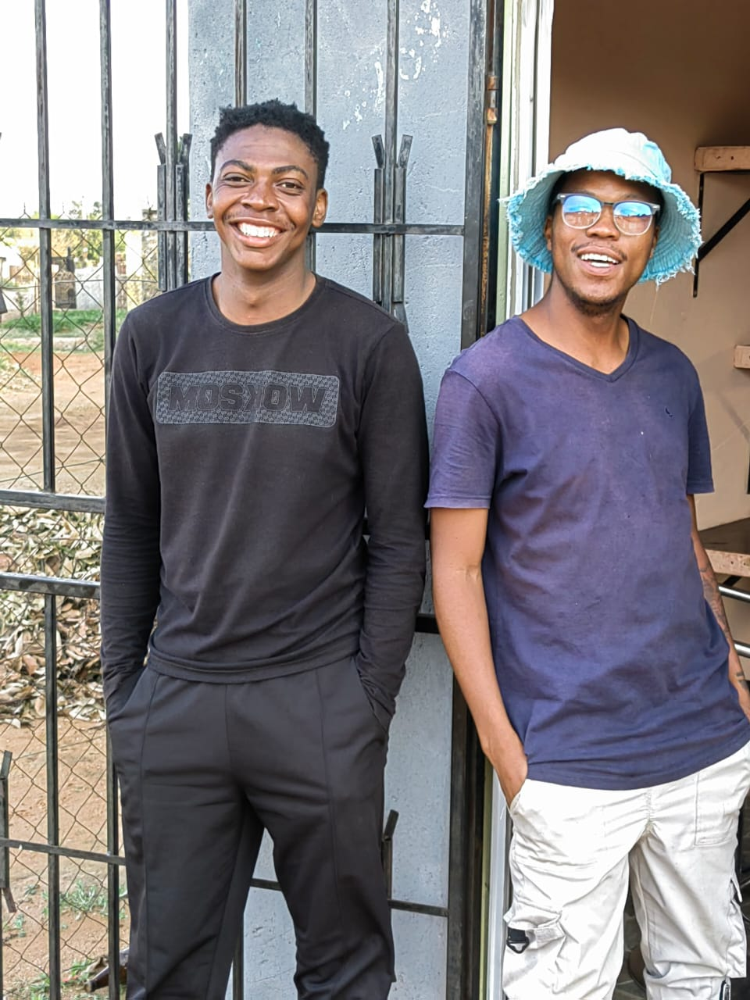

Established in 2019 in Ga-Rankuwa Zone 2 before relocating to Zone 15 in 2022, Wright Cut Barbershop was founded by Boikhutso Maswanganyi and Kagiso Maluleka.
Both barbers are self-taught craftsmen who refined their expertise by studying master barbers across Africa, including experience working at Legends Barber before launching Wright Cut.
📍 932 Monato Street, Ga-Rankuwa View, Zone 15, 0208, Gauteng